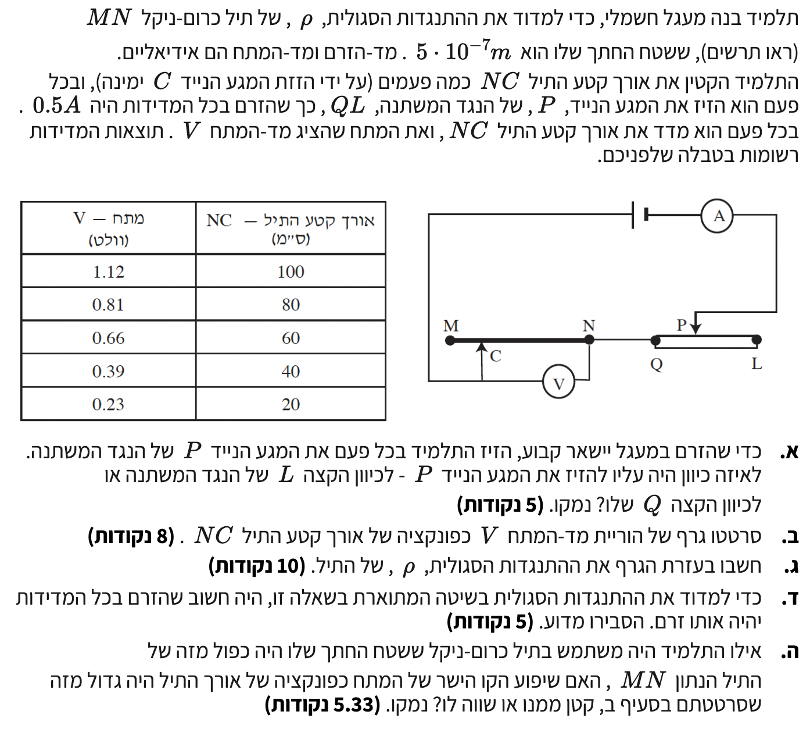

שאלה זו בודקת הבנה של ניסוי חקר בו נמדדת ההשפעה של אורך תיל המהווה נגד בתוך מעגל חשמלי במקביל לנגד משתנה. במוקד נמצאים חוק אוהם והנוסחה המגדירה את ההתנגדות של המוליך.
אנו מפעילים כאן מערכת שבה מתבצעת בקרה - על מנת ללמוד את השפעת האורך על המתח באופן מבודד, אנו נאלצים לדאוג לכך שערכי הזרם יישארו קבועים, ולגרף הליניארי המתקבל יהיה שיפוע הקשור להתנגדות הסגולית.

[תמונת השאלה המקורית]לא נמצאה תמונה בשם question-image.png באותה תיקייה.
סעיף א'
מה נתון: הזרם במעגל \( I = 0.5 \text{ A} \). התלמיד הקטין את אורך הקטע \( NC \) של התיל.
מה מחפשים: לאיזה כיוון התלמיד היה צריך להזיז את המגע הנייד \( P \), לקצה \( L \) או \( Q \), ולנמק מדוע.
כאשר התלמיד הקטין את האורך \( NC \), הרי שלפי הנוסחה להתנגדות תיל \( R \), ההתנגדות של המקטע קטנה. אם לא היינו משנים שום דבר נוסף במעגל, על פי חוק אום למעגל סגור ההתנגדות הכוללת של המעגל הייתה יורדת, והזרם סך הכול במעגל היה גדל.
שלב 2: ניתוח השינוי בנגד המשתנה
על מנת לשמור על זרם קבוע בתנאים של כא"מ קבוע במקור, ההתנגדות הכוללת של המעגל חייבת להישאר ללא שינוי. לכן מול הקטנת ההתנגדות ב- \( NC \), אנו חייבים להגדיל את ההתנגדות של הנגד המשתנה \( QL \).
שלב 3: כיוון ההזזה במעגל הספציפי
נבחן את כיוון הזרם במעגל: בנגד המשתנה הזרם זורם מן הקצה \( Q \) אל המגע \( P \), ולכן הקטע שנכלל במעגל הוא \( QP \), ואילו הקטע \( PL \) נמצא מחוץ למעגל. כדי להגדיל את התנגדות הנגד המשתנה, צריך להגדיל את אורך הקטע הפעיל \( QP \). לכן יש להזיז את המגע \( P \) לכיוון \( L \), וכך המרחק בינו לבין \( Q \) גדל.
מסקנה: התלמיד צריך להזיז את המגע הנייד לכיוון \( L \).
טיפ מורה: תמיד שאלו את עצמכם קודם כל: "לפי שרטוט המעגל, איזה קטע מתוך הנגד קשור כרגע למעגל וזורם בו הזרם?". רק כך תדעו האם להזיז ימינה יקטין או יגדיל אותו. במקרה זה, הזרם עובר מן הקצה \( Q \) אל המגע \( P \), ולכן המסלול החשמלי בנגד הוא הקטע \( QP \) בלבד.
סעיף ב'
מה נתון: נתוני המדידה מהטבלה: אורך התיל \( NC \) בס"מ ומדידת מד-המתח \( V \).
מה מחפשים: סרטוט גרף פיזור המראה את הוריית מד-המתח (ציר \( Y \)) כפונקציה של אורך התיל (ציר \( X \)), עם קו מגמה מתאים.
ביצוע הסרטוט:
נעביר את היחידות ל-MKS (שימוש במטרים עבור קו מגמה תקני - חשוב לשים לב להמרה). האורכים הנתונים: 20 ס"מ עד 100 ס"מ הופכים ל- 0.2 מ' עד 1.0 מ'.
התוצאה: גרף של נקודות מפוזרות, שעליו מעבירים קו ישר המתאים בצורה הטובה ביותר למיקום הכללי של הנקודות.
טיפ מורה: תלמידים יקרים, כשאתם משרטטים קו מגמה, המטרה היא למצוא את הישר הקרוב ביותר לכלל הנקודות. כדי לעשות זאת נכון, נסו להעביר את הקו כך שמספר הנקודות שמעליו יהיה זהה (עד כמה שאפשר) למספר הנקודות שמתחתיו. אם הקשר הפיזיקלי מחייב יחס ישר (כמו במקרה שלנו), עליכם להתחיל את הקו מראשית הצירים. עצה זהב: השתמשו בסרגל שקוף כדי שתוכלו לראות את הנקודות שתחתיו לפני המתיחה, ושרטטו תמיד בעיפרון כדי לאפשר מחיקה קלה ומהירה במקרה של טעות!
סעיף ג'
מה נתון: שטח החתך של התיל \( A = 5 \cdot 10^{-7} \text{ m}^2 \), זרם התיל הקבוע: \( I = 0.5 \text{ A} \).
מה מחפשים: לחשב, בעזרת הגרף, את ההתנגדות הסגולית \( \rho \) של התיל.
נוסחאות ועקרונות בשימוש: \( V = IR \)\( R = \rho \frac{\ell}{A} \)
פתרון צעד-אחר-צעד:
שלב 1: מציאת משוואת הגרף הליניארי
נבטא את המתח הנמדד בפונקציה של הגדלים בניסוי כדי למצוא למה שווה השיפוע. נציב את נוסחת התנגדות התיל אל תוך חוק אוהם:
\[ V = I \cdot R = I \cdot \left(\rho \frac{\ell}{A}\right) = \left( \frac{I \cdot \rho}{A} \right) \cdot \ell \]
ניתן לזהות כאן קשר של קו ישר שמבנהו \( y = mx \). כאשר המשתנה העצמאי שלנו הוא האורך \( \ell \), והשיפוע של קו המגמה מתאר את המקדם:
\[ m = \frac{I \cdot \rho}{A} \]
שלב 2: שאיבת ערך השיפוע מקו המגמה
כעת נבחר שתי נקודות הנמצאות באופן מובהק על קו המגמה ששרטטנו – ולא ניקח סתם נקודה מהטבלה אלא אם היא יושבת "בול" על הישר! נבחר את הראשית \((0,0)\) ונקודה נוספת שקריאה היטב על קווי הרשת, למשל \((0.8, 0.86)\):
מסקנה: ההתנגדות הסגולית של התיל היא \( 1.075 \cdot 10^{-6} \, \Omega \cdot \text{m} \).
טיפ מורה: תלמידים יקרים, כשאתם מחשבים שיפוע של קו מגמה, עליכם לקרוא את הנקודות אך ורק מתוך הקו עצמו ואסור לכם להשתמש בנקודות הנתונות בטבלה! למה זה כל כך חשוב? קו המגמה מהווה מעין "ממוצע" ויזואלי של כלל המדידות שלכם, ובכך הוא ממזער טעויות ושגיאות מדידה הקיימות בכל מדידה בודדת. אם תחשבו שיפוע משתי נקודות מהטבלה, אתם למעשה מתעלמים מכל שאר המדידות שעשיתם בניסוי. שימוש בקו מאפשר למצות את המידע מכלל הנתונים ונותן את התוצאה המדויקת ביותר.
סעיף ד'
מה נתון: התלמיד וידא שהזרם יהיה זהה (קבוע) בכל המדידות.
מה מחפשים: הסבר פיזיקלי/מחקרי מדוע מניעת שינויים בזרם חשובה לניסוי.
נוסחאות ועקרונות בשימוש: \( V = IR \)\( R = \rho \frac{\ell}{A} \)
הסבר והחשיבות:
כאשר התלמיד משרטט את הגרף בניסוי שלו, הוא מניח קשר מובהק במבנה של משוואת קו ישר (פונקציה לינארית). כפי שראינו, ביטוי שיפוע הישר בגרף הוא בהכרח הביטוי \( m = \frac{I \cdot \rho}{A} \).
בשביל שהשיפוע \( m \) באמת יהיה קבוע ולא ישתנה, כל הגורמים שבפנים חייבים להיות קבועים – שטח החתך לא השתנה (אותו חוט), וסוג החומר (התנגדות סגולית) אינו משתנה בדרך. אולם הזרם עשוי היה לחמוק מהשליטה בעקבות שינוי אורך התיל שגרם לשינוי התנגדות מעגלית. אם הזרם \( I \) היה יכול להשתנות לאורך המדידות במעגל, הרי שהגרף היה מפסיק להיות ישר (כל נקודה הייתה שייכת למעין זרם אחר בקבוצה).
מסקנה: הזרם חייב להישאר קבוע כדי לוודא שמשתנה זה לא יתערב ויפגע בקו הליניארי של תוצאות הגרף.
רגע של לימוד: בשיטת החקר המדעי אנחנו עובדים לפי עיקרון העונה לשם "בידוד משתנים". כשאנחנו רוצים לבדוק את ההשפעה של גורם אחד (המשתנה הבלתי תלוי, במקרה שלנו אורך התיל) על גורם אחר (המשתנה התלוי, במקרה שלנו המתח), אנחנו חייבים להבטיח שכל שאר המשתנים האפשריים במערכת יישארו קבועים. אם עוד גורמים ישתנו גם הם – כמו הזרם בניסוי הזה – לעולם לא נוכל לדעת האם השינוי שראינו בתוצאות נבע מהגורם שרצינו לחקור מלכתחילה או ממשתנה אחר שהתערב. לכן, שמירה על זרם קבוע (וגם על טמפרטורה, שטח חתך וסוג החומר) היא תנאי הכרחי להסקת מסקנות מדעיות תקפות.
סעיף ה'
מה נתון: השערה לגבי תיל בעל שטח חתך כפול מזה המקורי \( A_{new} = 2A \).
מה מחפשים: לקבוע האם במצב זה לגרף היה שיפוע גדול יותר, קטן יותר או שווה לו.
נוסחאות ועקרונות בשימוש: \( V = IR \)\( R = \rho \frac{\ell}{A} \)
הסבר פיזיקלי קצר:
הגרף הקודם היה נסמך על תלות בין השיפוע לפיתוח המתמטי \( m = \frac{I \cdot \rho}{A} \). שטח החתך \( A \) פועל כגורם במכנה השבר.
אם המכנה (שטח החתך) גדל פי 2, בעוד המונה לא השתנה (אותו החומר, אותו הזרם), היחס כולו קטן.
מסקנה: שיפוע הגרף במקרה של הרחבת התיל יהיה קטן ממנו.
טיפ אינטואיטיבי (זהירות מתפיסה שגויה!): לא להתבלבל, הזרם הוא מה שקבענו להיות קבוע בניסוי הזה! תיל בעל שטח חתך רחב יותר משמש כמעבר "קל" ורחב יותר, ולכן התנגדותו קטנה יותר. כתוצאה מכך, כדי להזרים בתוכו את אותו הזרם בדיוק, נדרש פחות מתח (פחות "דחיפה" חשמלית) עבור כל סנטימטר של תיל. לכן, המתח הנדרש יעלה לאט ומתון יותר ככל שנתקדם לאורך התיל, מה שיבוא לידי ביטוי בגרף כשיפוע קטן יותר.
נוסח השאלה המקורית
[תמונת השאלה המקורית]לא נמצאה תמונה בשם question-image.png.